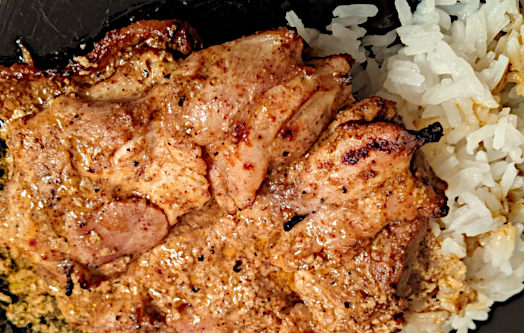

| Für 4 Personen: | |
| Zutaten für Tandoori Chicken: | |
| 4 | Pouletschenkel ohne Knochen und ohne Haut |
| 1/2 TL | Cayenne Pulver |
| 1/2 TL | Kurkuma |
| 1/2 TL | Korriander gemahlen |
| 1/2 TL | Kreuzkümmel, gemahlen |
| 1 TL | Paprika |
| 1 TL | Garam Masala |
| 2 EL | Olivenöl |
| 2 | Knoblauchzehen |
| 1 TL | frisch geriebener Ingwer |
| 4 EL | Volfettes Natur Joghurt |
| 1/2 | Saft von Zitrone |
| Salz, Pfeffer | |
| Frischer Korriander | |
| Zutaten für Mizen-Raita: | |
| Natur Joghurt | |
| Frische Minze | |
| Olivenöl | |
| Salz und Pfeffer | |
| Zutaten für die eingelegte rote Zwiebel: | |
| 1 | Rote Zwiebel |
| 1 | Lorbeer Blatt |
| 1 TL | Schwarze Pfefferkörner |
| 1 TL | Salz |
| 1.5 EL | Zucker |
| 2.5 dl | Rotweinessig |
| Zutaten für die Chapatti: | |
| 125g | Mehl |
| 85g | Wasser |
| 1 Prise | Salz |
Für das Tandoori Chicken das Olivenöl in eine Pfanne geben, mit den trockenen Gewürzen. Auf mittlerer Hitze 1-2 Minuten rösten, bis die Gewürze leicht getoastet sind und ihr wunderbares Aroma preis geben. Auskühlen lassen.
In einer Rührschüssel das Joghurt, den gepressten Knoblauch, den geraffelten Ingwer und den Zitronensaft verrühren. Die abgekühlte Gewürzpaste dazu geben und mit Salz und Pfeffer abschmecken.
Das Pouletfleisch dazu geben und gut mit der Tandoori Paste vermengen.
4 Stunden oder über Nacht marinieren lassen. (Funktioniert auch wenn man es nur kurz mariniert.)
Für die Chipatti das Mehl, Salz und Wasser zu einem Teig kneten. 5 Minuten kneten und in die Schüssel zurückgeben. 30 Minuten ruhen lassen.
Für die eingelegte Zwiebel: Den Essig in einer Pfanne mit dem Lorbeerblatt, den Pfefferkörnern, dem Salz und Zucker aufkochen. Salz und Zucker sollen vollständig aufgelöst sein. Die Zwiebel in Streifen oder Ringe schneiden und in ein sterilisiertes Glas geben. Mit der heissen Essigbrühe übergiessen. Kann nach 30 Minuten konsumiert werden, hält aber auch im Kühlschrank 3-4 Wochen.
Um das Pouletfleisch zu kochen, den Grill auf die höchste Stufe stellen. Den Ofen auf 180°C vorheizen. Das Fleisch 10 Minuten unter dem Grill braten. Nach 5 Minuten wenden. Es soll etwas Farbe annehmen und leicht verkohlen. Dann in den Ofen transferieren und 10 Minuten weitergaren. Anschliessend herausnehmen und 10 Minuten unter Folie ruhen lassen.
Das Raita zubereiten indem das Joghurt mit der feingeschnittenen Minze verrührt wird. Mit Olivenöl, Salz und Pfeffer abschmecken.
Die Chipattis zubereiten indem der Teig in 4 Teile geteilt wird. Jedes Teigstück in eine Kugel rollen und dann mit genügend Mehl zu einer Scheibe auswallen. Ca 15cm Durchmesser und 1mm dick.
In einer Pfanne, die nicht bei hohen Temperaturen kaputt geht, kräftig einheizen. Die Chipattis darin rösten. In ein Küchentuch wickeln und servieren.
Alles zusammen servieren. Auf ein Chipatti einen Löffel Raita geben, dazu Tandoori Chicken, etwas eingelegte Zwiebel und mit frischem Korriander garnieren.
Online Weihnachtsessen zum Selberkochen im Corona Winter 2020
Hervorragend.